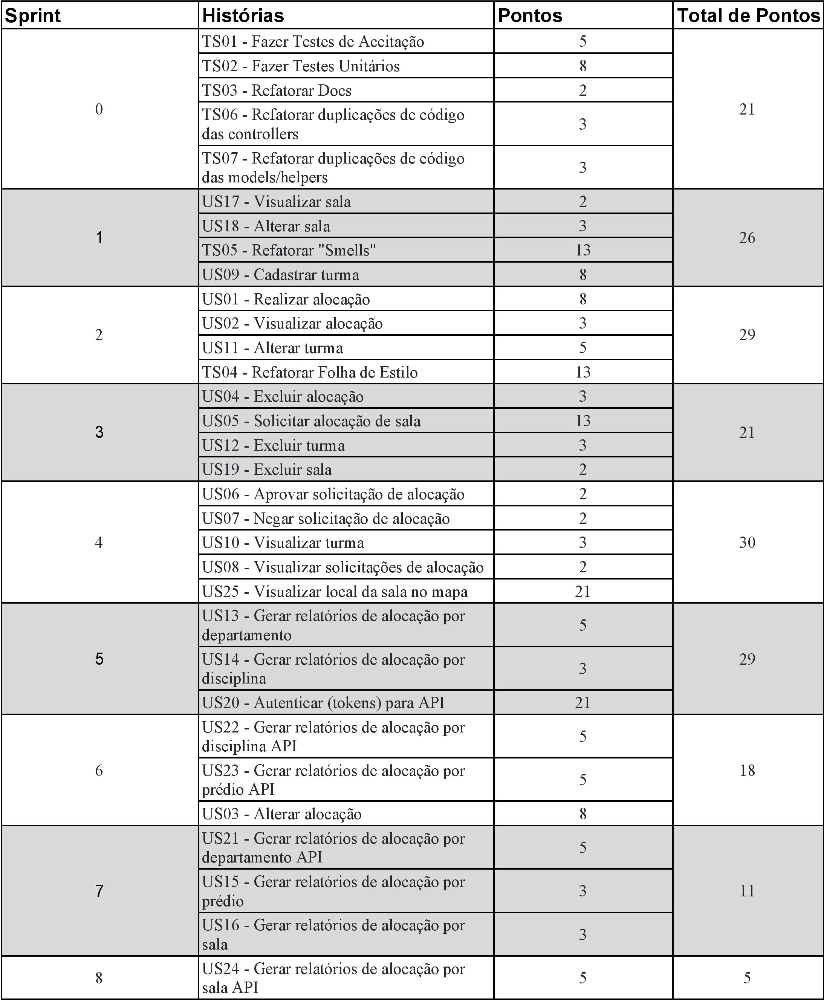

Planejamento da Release
| Data | Responsável | Versão | Mudança realizada |
|---|---|---|---|
| 24/04/17 | Vinícius Carvalho | 0.1 | Criação do Planejamento e descrição dos papéis |
| 25/04/17 | Vinícius Pinheiro | 0.2 | Adicionando o Quadro de conhecimentos inicial |
| 28/04/17 | Vinícius Carvalho | 1.0 | Ajuste no Planejamento |
| 08/05/17 | Vinícius Pinheiro | 2.0 | Correção na definição dos papéis e dos épicos,features e user stories |
1. Planejamento da Release
Duração da Relase: De 24/04 à 23/06
Quantidade de Sprints: 8 sprints
Definição de Pronto: Será utilizado o conceito de "pronto" quando as histórias de usuário estiverem testadas (testes unitários e de aceitação), dentro dos valores aceitáveis das métricas e solicitado pull request na branch devel.
2. Épicos, Features e Histórias de Usuário
2.1 Épicos
Épico é um composto por Features e representam macro entregáveis do projeto, são como marcos deste.
Serão abordados 2 épicos: [EP01] Coordenação de Alocação [EP02] API
2.2 Features
Feature representa um agrupamento de User Stories e Technical Stories comuns que por seu tamanho não é implementada como User Storie.
Serão abordados 5 Features: [EP01FE01] gerenciar alocações [EP01FE02] manter Turma [EP01FE03] Gerar relatório [EP01FE04] Gerenciar salas * [EP02FE05] Fazer API
2.3 Histórias de Usuário e Histórias Técnicas
Uma história de usuário (User Stories) são pequenas funcionalidades que compõem o sistema final e que serão implementadas.
Uma história técnica (Technical Stories) são atividades que não agregam valor diretamente para o cliente, mas que são efetuadas para melhoria interna do software, melhorando, por exemplo, a manutenibilidade.
| Histórias de Usuário | Histórias Técnicas | Total de Histórias |
|---|---|---|
| 25 | 07 | 32 |
Todas as histórias podem ser localizadas em nosso Backlog do produto
3. Roadmap
Para melhor organização do time, foi definido o Roadmap inicial do projeto, tendo assim um controle sob as metas de cada sprint.
As últimas sprints planejadas tem uma carga menor, tendo em vista a possibilidade de atrasos e necessidade de adição de histórias técnicas, atitudes que podem gerar atrasos.  Clique aqui para visualizar maior
{kind=link}
4. Conhecimento
4.1. Quadro de conhecimento inicial
 Clique aqui para visualizar maior
Clique aqui para visualizar maior
{kind=link}